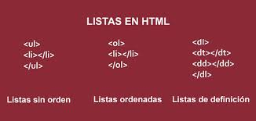

-
Listas
- En el diseño de páginas web es posible crear listas mediante la utilización de etiquetas que pueden
estar anidadas, es decir, una entre otras formando de esta manera árboles de diferente complejidad.
Imagen 2. Tipos de listas de HTML
 Listas Desordenas (viñetas)
- Las listas desordenadas muestran los ítems antecedidos por una viñeta y se utilizan la siguiente
la etiqueta < u l >.
Ejemplo:
< u l >
< l i > Listas Ordenadas< / l i >
< l i > Listas Desordenadas< / l i >
< / u l >
En el navegador se visualizará de la siguiente manera:
• Listas Ordenadas
• Listas Desordenadas
Listas Ordenadas (Enumeradas)
- Las listas Ordenadas muestran los ítems de manera enumerada en un solo nivel.
Ejemplo:
< o l >
< l i > Listas Desordenadas < / l i >
< l i > Listas Ordenas < / l i >
< / o l >
En el navegador se visualizará de la siguiente manera:
1. Listas Ordenadas
2. Listas Desordenadas
Listas de definiciones
- En este tipo de listas se utilizan para destacar conceptos y definiciones con un texto indentado.
Para este tipo de listas se utilizan las etiquetas < d t > y < d d > en lugar de < l i > .
Ejemplo:
< d l >
< d t > Listas de definiciones < / d t >
< d d > Se utilizan para definición de conceptos. < / d d >
< d t > Listas desordenas< / d t >
< d d >Son listas de elementos que se encuentran antecedidas de una viñeta. < / d d >
< / d l >
- Listas de definiciones
- Se utilizan para definición de conceptos.
- Listas desordenas
- Son listas de elementos que se encuentran antecedidas de una viñeta.